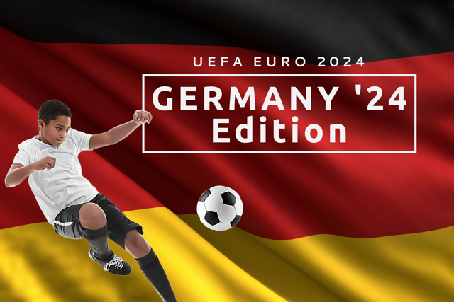

Hendy's Hunches
Pit your Euro 2024 predictions against others for a chance to earn a prize spot or bragging rights in the rankings.
Pit your Euro 2024 predictions against others for a chance to earn a prize spot or bragging rights in the rankings.
To play Hendy's Hunches, you will soon need to:
For any match prediction, you can be awarded either 0, 1, 2, 3 or 7 points.
The different scenarios for points scoring are as follows:
Examples of points awarded, for a given prediction and result, are shown below:
| You Predict | Match Result | Description | Points Awarded |
|---|---|---|---|
| 1 - 0 | 1 - 0 | Home win, both correct scores and identical result predicted | 7 |
| 1 - 2 | 1 - 2 | Away win, both correct scores and identical result predicted | 7 |
| 1 - 1 | 1 - 1 | Draw, both correct scores and identical result predicted | 7 |
| 3 - 1 | 3 - 0 | Home win and correct home score predicted | 3 |
| 3 - 2 | 4 - 2 | Home win and correct away score predicted | 3 |
| 0 - 2 | 0 - 3 | Away win and correct home score predicted | 3 |
| 1 - 2 | 0 - 2 | Away win and correct away score predicted | 3 |
| 1 - 0 | 2 - 1 | Home win predicted | 2 |
| 0 - 3 | 1 - 2 | Away win predicted | 2 |
| 3 - 3 | 1 - 1 | Draw predicted | 2 |
| 0 - 0 | 0 - 1 | Home score predicted | 1 |
| 1 - 1 | 0 - 1 | Away score predicted | 1 |
| 1 - 0 | 0 - 2 | Incorrect outcome and no scores predicted | 0 |
| 0 - 2 | 1 - 1 | Incorrect outcome and no scores predicted | 0 |
| 3 - 3 | 2 - 1 | Incorrect outcome and no scores predicted | 0 |
For any further information, or to express your interest in taking part, please contact James Henderson.